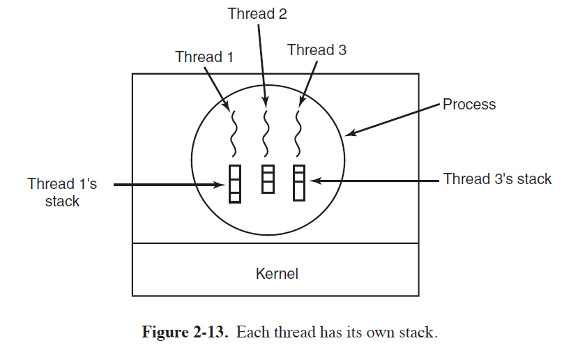
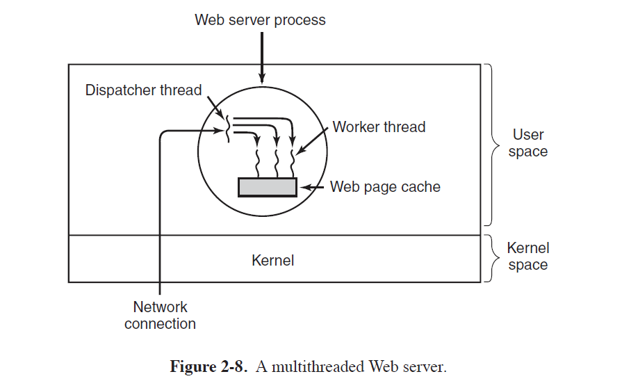
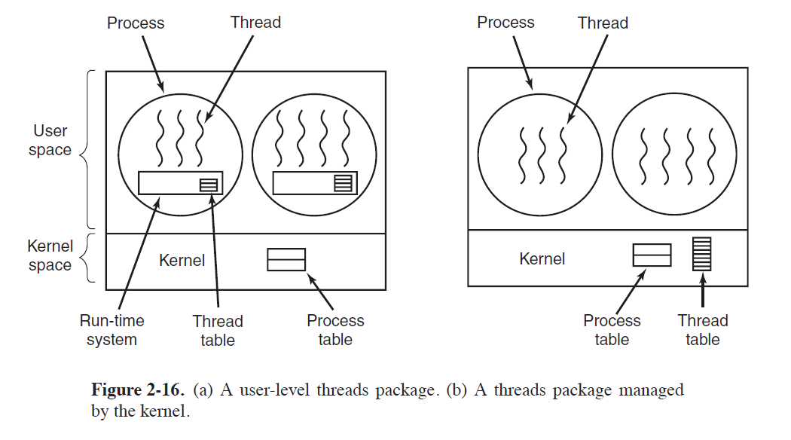

ThreadWhat is a thread?What's shared between threads?Why do we need thread?Word Processor ExampleWeb Server ExampleMulti-threadedSingle threaded web serverPOSIX ThreadsTL;DRpthread create pthread_exit pthread_join pthread_yield pthread_attr_init pthread_attr_destroy ExampleImplementing Threads in User SpaceImplementing Threads in the Kernel
Thread
What is a thread?
Process
it is a way to group related resource together
- address space containing program text and data
- other resources(open files, child processes, pending alarms, signal handlers)
Thread
Definition: a sequential execution stream within the process.
Threads are the entities scheduled for execution on the CPU.
- The CPU switches rapidly back and forth among the threads, providing the illusion that the threads are running in parallel, albeit on a slower CPU than the real one.
Threads are sometimes called lightweight processes.
- Because threads have some of the properties of processes,
Multithreading
describe the situation of allowing multiple threads in the same process.
What's shared between threads?

All threads have exactly the same address space, which means that they also share the same global variables.
- In addition to sharing an address space, all the threads can share the same set of open files, child processes, alarms, and signals, an so on, as shown in Fig. 2-12
- The ability for multiple threads of execution to share a set of resources so that they can work together closely to perform some task.
Each thread has its own state
running: A running thread currently has the CPU and is active.blocked: a blocked thread is waiting for some event to unblock it.ready: a ready thread is scheduled to run and will as soon as its turn comes up.terminated
Each thread has its own stack
- Each thread will generally call different procedures and thus have a different execution history. This is why each thread needs its own stack.
- 
| Per-process Items | Per-thread items |
|---|---|
| Address space | Program counter |
| Global variables | Registers |
| Open files | Stack(local variables, function call stack) |
| Child processes | State |
| Pending alarms | |
| Signal and signal handlers | |
| Accounting information |
Problem
- What happens if one thread closes a file while another one is still reading from it?
Why do we need thread?
Address Space sharing
- the ability for the parallel entities to share an address space and all of its data among themselves.
Easy to create and destroy
Threads are easier (i.e., faster) to create and destroy than processes.
- because they are lighter weight than processes,
Performance gain on I/O bound application
- Threads yield no performance gain when all of them are CPU bound,
- but when there is substantial computing and also substantial I/O, having threads allows these activities to overlap, thus speeding up the application.
Real parallelism
- Useful on systems with multiple CPUs, where real parallelism is possible.

Word Processor Example
Scenario: word processor automatically saving the entire file to disk**
Problem
- if the program were single-threaded, then whenever a disk backup started, commands from the keyboard and mouse would be ignored until the backup was finished.
Solution
- The first thread just interacts with the user.
- The second thread writes the contents of RAM to disk periodically.
Having multiple process would not work
- because all three threads need to operate on the document.
Web Server Example
Multi-threaded

Assumption: a system call blocks only the calling thread, not the entire process.
Web servers use
cacheto improve performance by maintaining a collection of heavily used pages in main memory.the dispatcher
- reads incoming requests for work from the network
- After examining the request, it chooses an idle (i.e., blocked) worker thread and hands it the request
the worker
wakes up
checks to see if the request can be satisfied from the Web page cache
- If not, it starts a read operation to get the page from the disk and blocks until the disk operation completes.
- When the thread blocks on the disk operation, another thread is chosen to run, possibly the dispatcher
This model allows the server to be written as a collection of sequential threads.

- The dispatcher’s program consists of an infinite loop for getting a work request and handing it off to a worker.
- Each worker’s code consists of an infinite loop consisting of accepting a request from the dispatcher and checking the Web cache to see if the page is present.
Single threaded web server
- The main loop of the Web server gets a request, examines it, and carries it out to completion before getting the next one.
- the CPU is simply idle while the Web server is waiting for the disk.
- result is many fewer requests/sec can be processed.
POSIX Threads
- To make it possible to write portable threaded programs, IEEE has defined a standard for threads in IEEE standard 1003.1c. The threads package it defines is called
Pthreads. - Attribute Structure: All pthreads threads have certain properties. Each one has an identifier, a set of registers (including the program counter), and a set of attributes, which are stored in a structure.
TL;DR
| Thread call | Description |
|---|---|
pthread create | Create a new thread |
pthread_exit | Terminate the calling thread |
pthread_join | Wait for a specific thread to exit |
pthread_yield | Release the CPU to let another thread run |
pthread_attr_init | Create and initialize a thread’s attribute structure |
pthread_attr_destroy | Remove a thread’s attribute structure |
pthread create
- A new thread is created using the
pthread_createcall. - The thread identifier of the newly created thread is returned as the function value.
pthread_exit
- When a thread has finished the work it has been assigned, it can terminate by
calling
pthread_exit. - This call stops the thread and releases its stack.
pthread_join
- The thread that is waiting calls
pthread_jointo wait for a specific other thread to terminate. - The thread identifier of the thread to wait for is given as a parameter.
pthread_yield
- Sometimes it happens that a thread is not logically blocked, but feels that it has run long enough and wants to give another thread a chance to run.
- It can accomplish this goal by calling
pthread_yield.
pthread_attr_init
pthread_attr_initcreates the attribute structure associated with a thread and initializes it to the default values.- These values (such as the priority) can be changed by manipulating fields in the attribute structure.
pthread_attr_destroy
pthread_attr_destroyremoves a thread’s attribute structure, freeing up its memory.- It does not affect threads using it; they continue to exist.
Example
- When a thread is created, it prints a one-line message announcing itself, then it exits.
- The order in which the various messages are interleaved is nondeterminate and may vary on consecutive runs of the program.
xvoid* print_hello(void* _) { printf("Hello\n");}void* spawn(void* _) { pthread_t tid1, tid2, tid3; pthread_create(&tid1, NULL, print_hello, NULL); pthread_create(&tid2, NULL, print_hello, NULL); pthread_create(&tid3, NULL, print_hello, NULL); // comment/uncomment pthread_join(tid1, NULL); pthread_join(tid2, NULL); pthread_join(tid3, NULL);}int main() { pthread_t tid1, tid2; pthread_create(&tid1, NULL, spawn, NULL); pthread_create(&tid2, NULL, spawn, NULL); // comment/uncomment pthread_join(tid1, NULL); pthread_join(tid2, NULL); // usleep(700); return 0;}Implementing Threads in User Space

The first method is to put the threads package entirely in user space.
The kernel knows nothing about them.
- As far as the kernel is concerned, it is managing ordinary, single-threaded processes.
OS-independent
- A user-level threads package can be implemented on an operating system that does not support threads.
- With this approach, threads are implemented by a library
Thread table:
When threads are managed in user space, each process needs its own private thread table to keep track of the threads in that process.
keeps track only of the per-thread properties, such as each thread’s program counter, stack pointer, registers, state, and so forth.
managed by the runtime system
- When a thread is moved to ready state or blocked state, the information needed to restart it is stored in the thread table
Advantage
Thread switching : Doing thread switching is at least an order of magnitude faster than trapping to the kernel
- If the machine happens to have an instruction to store all the registers and another one to load them all, the entire thread switch can be done in just a handful of instructions.
Thread scheduling
- The procedure that saves the thread’s state and the scheduler are just local procedures, so invoking them is much more efficient than making a kernel call.
- Among other issues, no trap is needed, no context switch is needed, the memory cache need not be flushed, and so on.
Customized scheduling Algorithm
- User space threads allow each process to have its own customized scheduling algorithm.
Scalability: User space threads also scale better
- since kernel threads invariably require some table space and stack space in the kernel, which can be a problem if there are a very large number of threads.
Disadvantage
Blocking system call stop all threads
If one thread makes a system call, all the threads/the entire process will be stopped.
Changing to non-blocking system call?
Requiring changes to the operating system
- require changes to many user proglem
User-level threads could run with existing operating systems.
When this call is present, the library procedure read can be replaced with a new one that first does a select call and then does the read call only if it is safe (i.e., will not block).
- If the read call will block, the call is not made Instead, another thread is run
- This approach requires rewriting parts of the system call library, and is inefficient and inelegant, but there is little choice.
Page fault stop all threads
If a thread causes a page fault, the kernel blocks the entire process until the disk I/O is complete
- even though other threads might be runnable
If a thread starts running, no other thread in that process will ever run unless the first thread voluntarily gives up the CPU.
Unless a thread enters the run-time system of its own free will, the scheduler will never get a chance.
Possible solution
- have the run-time system request a clock signal (interrupt) once a second to give it control, but this, too, is crude and messy to program.
Implementing Threads in the Kernel
No run-time system is needed in each process
No thread table in each process
the kernel has a thread table that keeps track of all the threads in the system.
- The kernel’s thread table holds each thread’s registers, state, and other information.
All calls that might block a thread are implemented as system calls
- at considerably greater cost than a call to a run-time system procedure.
Thread recycling
- When a thread is destroyed, it is marked as not runnable, but its kernel data structures are not otherwise affected.
- When a new thread must be created, an old thread is reactivated, saving some overhead.
- Also possible for user-level threads, but since the thread-management overhead is much smaller, there is less incentive to do this.
Advantage
Kernel threads do not require any new, nonblocking system calls.
If one thread in a process causes a page fault, the kernel can easily check to see if the process has any other runnable threads
- if so, run one of them while waiting for the required page to be brought in from the disk
Disadvantage
The cost of a system call is substantial
- if thread operations (creation, termination, etc.) a common, much more overhead will be incurred.
Problem
What happens when a multithreaded process forks?
- Does the new process have as many threads as the old one did, or does it have just one?
When a signal comes in, which thread should handle it?
- What happens if two or more threads register for the same signal?